Korail Talk
A redesign that helps first-time visitors to Korea book train tickets on their own — search places, not station names.

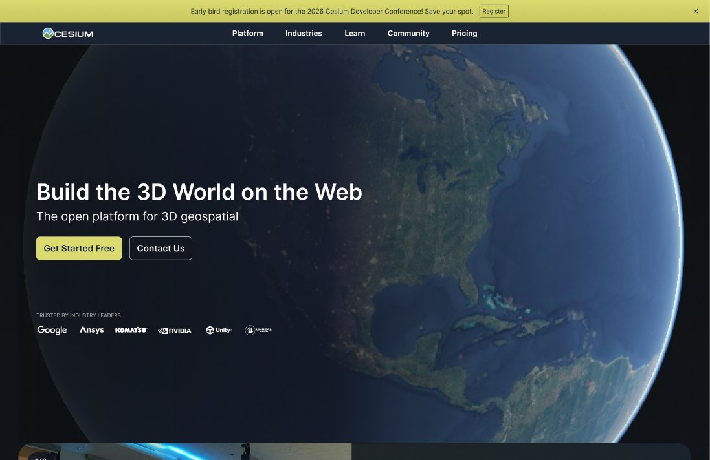
A 3D platform, made easy to choose
A concept redesign of the Cesium website, the open platform for 3D geospatial. The site explained technology first, so visitors couldn’t tell which product they needed. I rebuilt the main and pricing pages around one question — “which product is right for me?” — for desktop and mobile.
View Screens1-1. Background
The homepage explained Cesium’s technology rather than what visitors could do with it. Its two product lines — SaaS and self-hosted — weren’t visible from the main page, demos were mostly still images, and it was unclear whether the site spoke to developers or enterprises. The direction became one sentence: let visitors find the product they need.
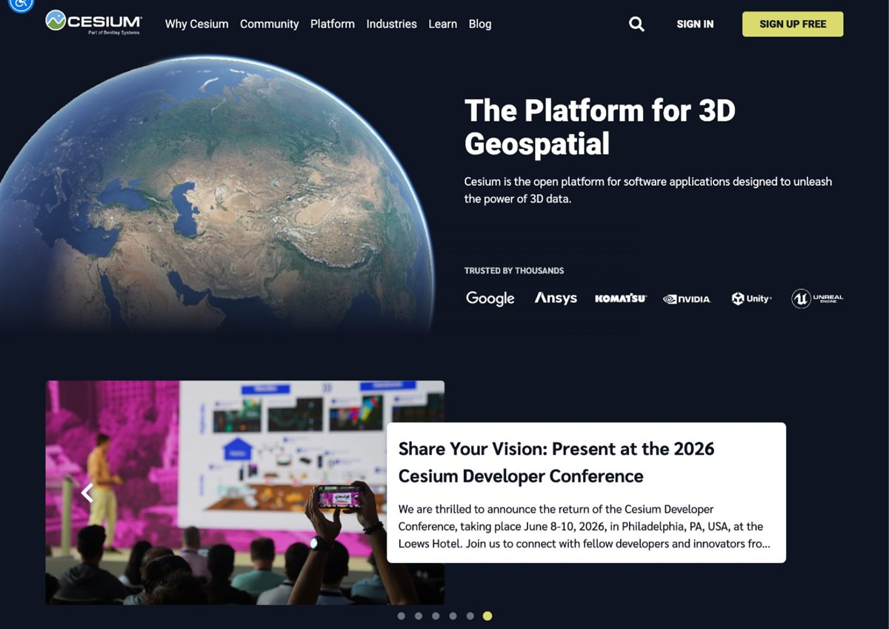
DESIGNER’S NOTE
Cesium is a leading 3D geospatial platform, but its homepage spoke mostly to people who already knew it. I wanted to see how far structure and wording alone could make a technical product approachable for first-time visitors.
2-1. Site Review
I captured the current homepage and noted, section by section, where a first-time visitor would get stuck.
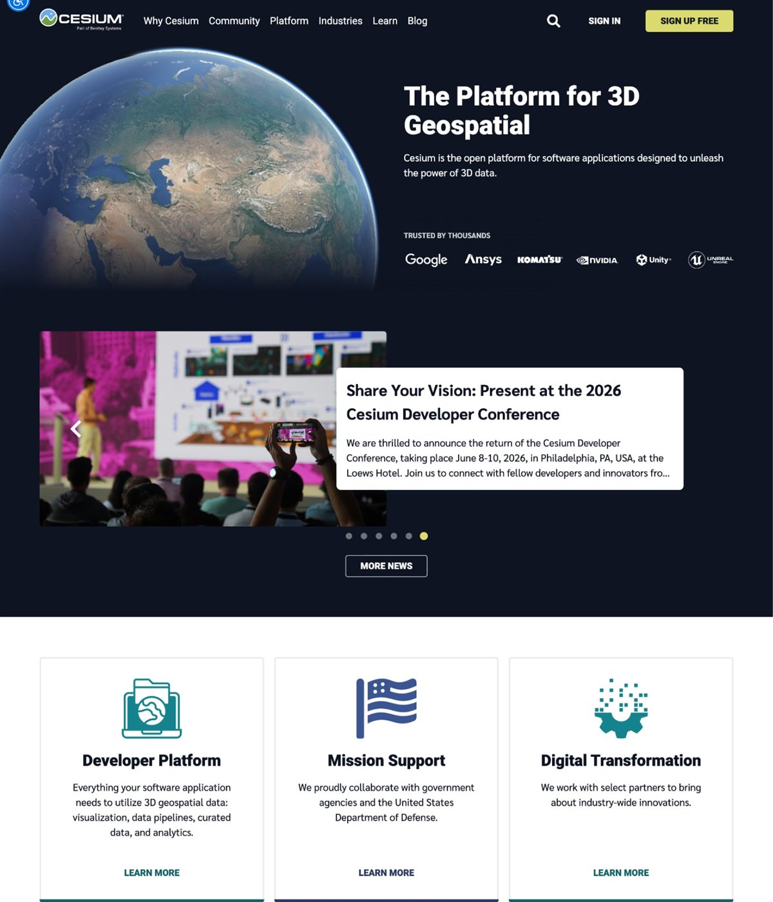
A latest-news banner took the first spot, ahead of what Cesium actually is.
The two product lines, SaaS and self-hosted, couldn’t be seen from the main page.
Benefits, image captions and intro copy said the same thing, and images didn’t match the text.
The product row repeated the images below it and wasn’t clickable.
The globe, Cesium’s symbol, was interactive — but nothing said so until you clicked.
The lightest way to start with Cesium sat at the very end of the page.
2-2. Strategy
The strategy goal was written from the visitor’s point of view, and three key goals guided every section that followed.
Make it obvious which product fits which visitor.
Explain each technology through how it’s applied and real cases.
A structure anyone can follow, not only developers.
| Current problem | What visitors think |
|---|---|
| Technology-first copy | “Why would I need this?” |
| Complex product structure | “I don’t know which one to use.” |
| Mostly image demos | “I can’t picture how I’d use it.” |
| Unclear target | “Is this for developers or for companies?” |
2-3. Target Users
A digital-twin manager wants a ready-to-use product; a developer wants the SDK and API. Each kept running into the other’s content.
Works at a public land & housing agency. Needs a SaaS product for real-time terrain analysis. Pain point: confusing product lines and technical terms.
Needs the SDK and API. Pain point: enterprise-focused pages get in the way of finding docs.
3-1. Scope & IA
I scoped the work to the header and footer, then the main content — the hero and product introduction. Navigation was regrouped by what visitors look for.
3-2. Wireframe
The hero carries one message and two actions. Below it come the conference, industries & use cases, then CesiumJS, Cesium ion and Cesium for Unreal in alternating rows, an FAQ, and a final call to start.
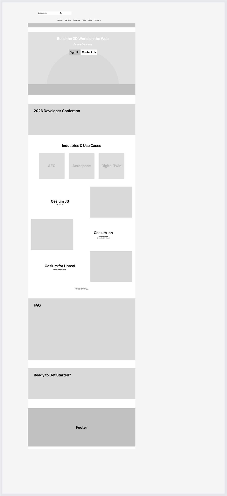
3-3. Interaction References
From reference sites I picked three ways to make 3D feel tangible on the web.
Let the product play instead of describing it in text.
Reveal the globe and products as the visitor scrolls.
Let visitors rotate and explore the 3D view themselves.
4-1. AI Drafts & Iterations
I used AI to explore layout directions quickly, then refined the page section by section — hero, cards, platform rows, pricing and FAQ — until each one answered a visitor’s question.
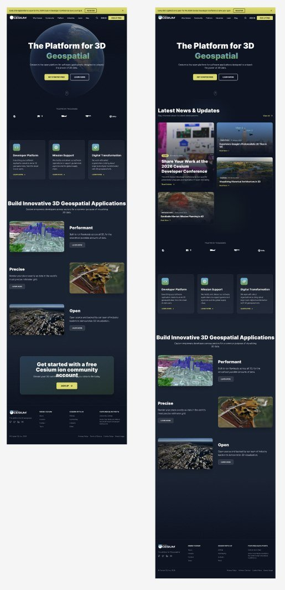
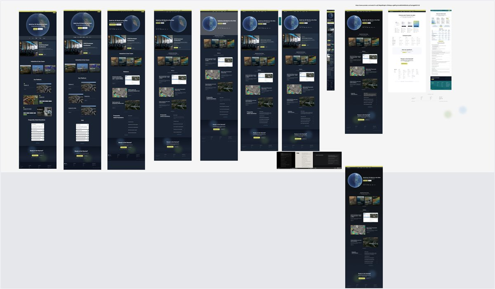
4-2. Main Page
The main page leads with the globe and one message, then industries, platform products, an FAQ and a free start. I also tested a light version for readability.
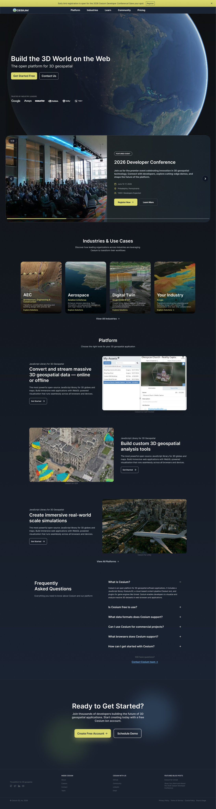
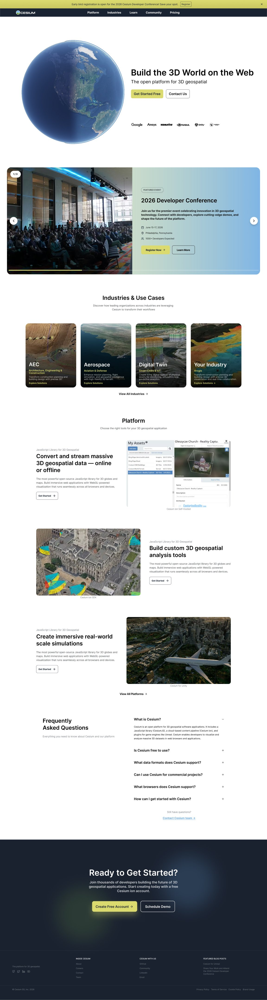
4-3. Pricing
The pricing page separates teams from individuals, shows yearly savings, and lays the plans side by side so visitors can choose without reading the docs.
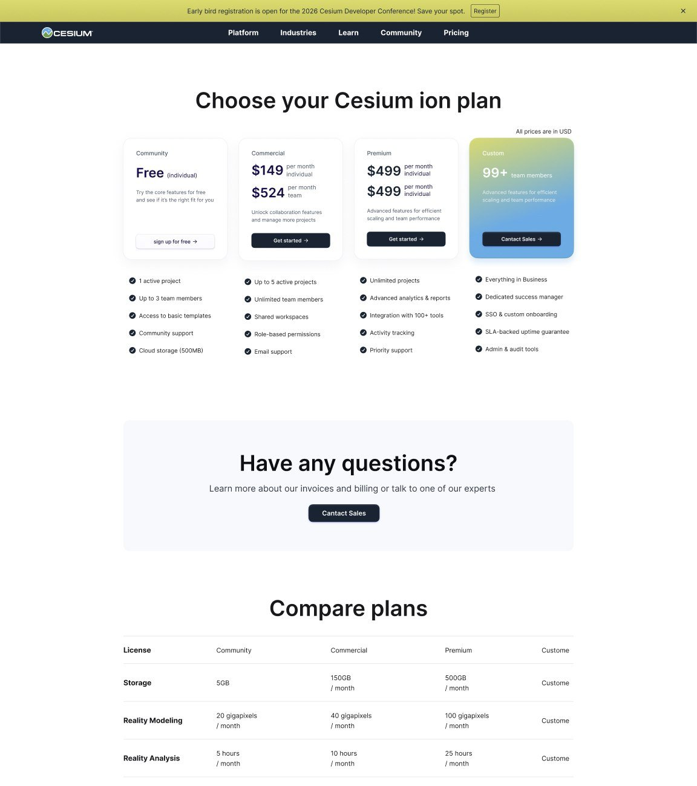
4-4. Mobile & Components
The main and pricing pages adapt to mobile, built from shared components for navigation, cards, buttons and the FAQ.
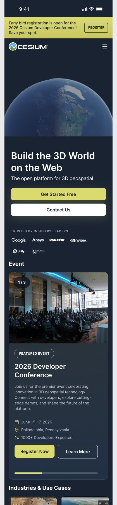
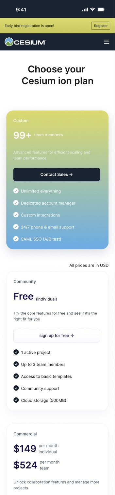
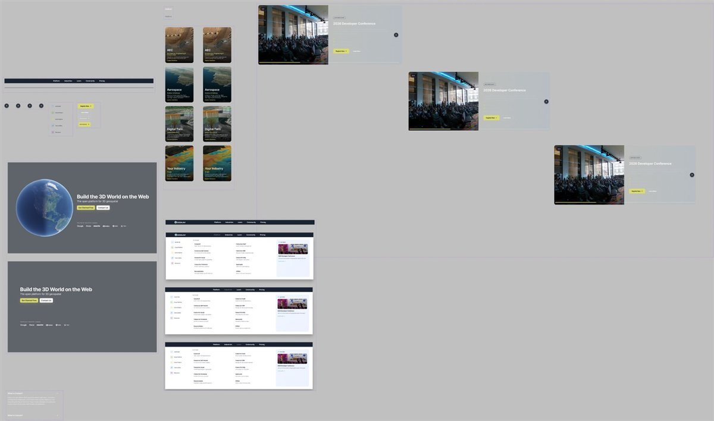
Starting from the visitor’s question — “which product do I need?” — gave every section a clear role and made the product lineup easy to scan.
This is a concept redesign without access to real users or analytics, and it hasn’t been usability-tested yet.
The redesign is still in progress. Next I’ll test it with developers and enterprise visitors, design the product detail pages, and prototype the globe interaction.
A redesign that helps first-time visitors to Korea book train tickets on their own — search places, not station names.
People check their health data often, but don’t always understand what the numbers mean. Heart Path translates heart data into meaning and clear next steps.